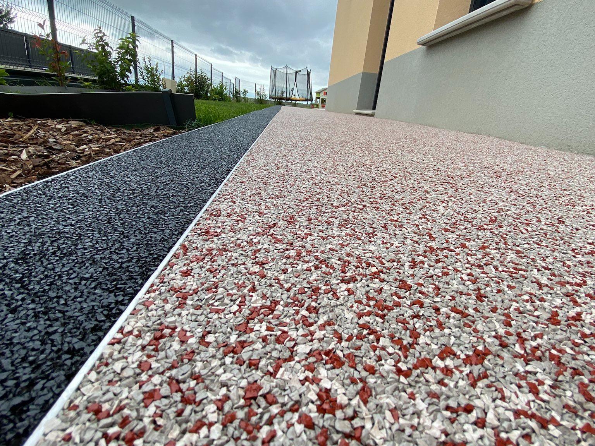

Nos services
Deux métiers, un même chantier.
La résine EPDM en signature, et tout le savoir-faire VRD qui va avec : réseaux, terrassement, clôtures.

EcoSky'Gum
Résine EPDM coulée en place
Un sol souple, drainant à 100%, sans joint et sans mauvaise herbe. Posé sur dalle béton, ancien carrelage ou support stabilisé.
Terrasses, plages de piscine, allées piétonnes et carrossables, contours d'arbres.
2 à 4 cm selon usage (piéton ou carrossable léger).
Granulats EPDM colorés, antidérapant classe R11, sans reflet.
Nettoyage au jet d'eau, aucun désherbage, aucun rejointoiement.
La pose, étape par étape
Nettoyage, réparation ou coulage d'une dalle si nécessaire.
Résine liante appliquée pour garantir l'adhérence.
Mélange granulats + liant PU, taloché à la main, bordures en finition noire.
24 à 48h avant remise en circulation piétonne.
Aménagements extérieurs & VRD
Ce qui prépare et entoure le sol.
Assainissement non collectif
Étude de sol, conception et pose de filière (compacte ou traditionnelle), mise aux normes ANC, montage du dossier SPANC.
Portails & clôtures
Fourniture et pose, motorisation, clôtures rigides ou grillagées selon le terrain.
Enrobés & terrassement
Allées carrossables, préparation de plateforme, réseaux enterrés.